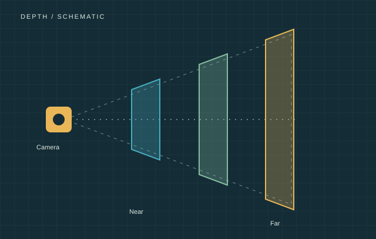
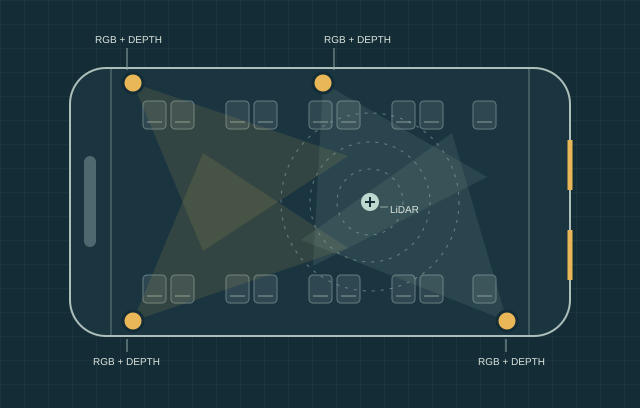
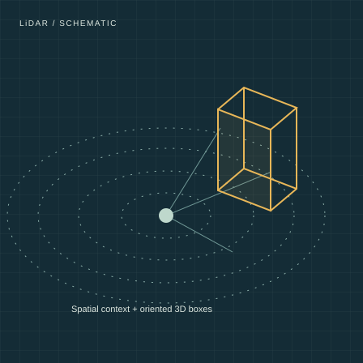

02 / Depth
Distance in every view
Depth images complement the RGB streams with spatial measurements. Camera calibration places these measurements in a shared coordinate system.
Public transport · Computer vision · 2026
A multi-view, multi-modal dataset for understanding the interior of public transport vehicles, bringing together RGB, depth, LiDAR, and 3D occupant annotations.
Browse sample previews
The dataset
Recorded inside a digitalized German city bus, the dataset supports research into occupants and activity across multiple views. Explore the recordings by scene, with camera calibration and timestamps connecting the sensor streams.

02 / Depth
Depth images complement the RGB streams with spatial measurements. Camera calibration places these measurements in a shared coordinate system.

03 / LiDAR
Point clouds and oriented 3D boxes provide geometric context, with object IDs, attributes, actions, and velocities.
Browse RGB, depth, and LiDAR previews, then download the original scene-organized sensor data and annotations.
The research
arXiv:2606.11739
June 2026
The paper introduces the dataset, calibration and pseudo-labeling pipeline, and 3D occupant annotations. It also presents nuScenes conversion and multi-view 3D detection benchmarks using Lift-Splat-Shoot and BEVFusion.
Start exploring
@misc{gorelik2026multiviewincabinmonitoringpublic,
title={Multi-View In-Cabin Monitoring System for Public Transport Vehicles},
author={Evgeny Gorelik and Kenny Dean Karrow and Fikret Sivrikaya
and Sahin Albayrak and Christian Baumann},
year={2026},
eprint={2606.11739},
archivePrefix={arXiv},
primaryClass={cs.CV},
url={https://arxiv.org/abs/2606.11739}
}